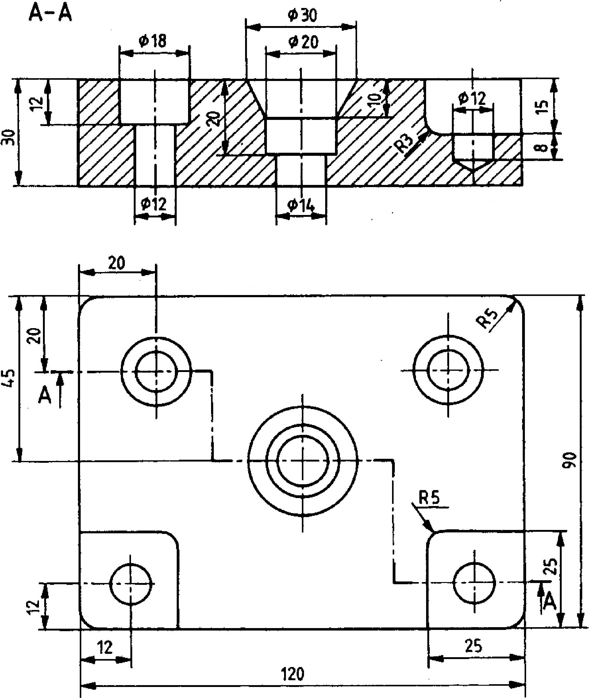

6. Metszeti ábrázolás 6.2.2. A lépcsős metszet Sok esetben az egy munkadarabon lévő furatok, üregek nem esnek egy síkba. Ilyenkor csak több teljes metszettel vagy több részmetszettel lehetne ábrázolni. A 114. a ábrán olyan alkatrész szemléltető képe látható, amelyen három különböző síkban helyezkednek el a belső kimunkálások. A három metszősíknál képzett teljes metszet a 114.b ábra tanúsága szerint részben bonyolulttá teszi az ábrázolást, ugyanakkor a sok metszeti vonalkázás felesleges rajzi munkát jelent. A három teljes metszet mindegyikéből kiemelhető az a metszeti környezet - nevezzük részmetszetnek -, amelyre az adott metszősíknál az ábrázolás során szükségünk van (114.C ábra). A felesleges, csak metszeti vonalkázást, ill. a szimmetria alapján ismétlődő részletet tartalmazó metszeti részt a rajzi munka megkönnyítésére elhagyjuk. A kimunkálások alakját megmutató részmetszeteket egy vetületen belül egyesítve rajzoljuk meg. A lépcsős metszet párhuzamos metszősíkokkal képzett részmetszetekből összetett metszet. A 115. ábrán látható a munkadarab műszaki rajza. A felülnézeten vastagított végű vékony pontvonallal rajzoljuk meg a metszősík lépcsős nyomvonalát, az elölnézet ennek megfelelő metszeti vetület. Ha két vagy több részmetszetet egymás mellé, vagyis egy vetületben egyesítve rajzolunk meg, akkor az így létrehozott egyesített metszetet összetett metszetnek nevezzük. A lépcsősmetszet alkalmazása alkatrészrajzon 115. ábra A teljes metszetekből kiemelt részmetszetek a) A-A b) A lépcsős metszet több párhuzamos metszősíkkal képzett részmetszetből tevődik össze c) 114. ábra 33
